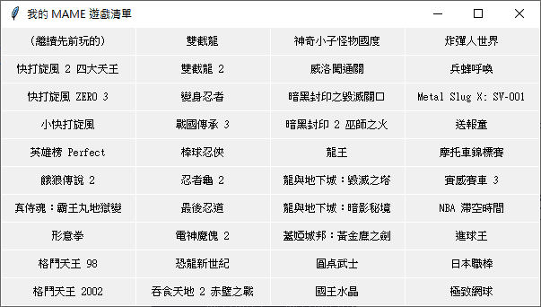

我收藏的 Arcade games
跟別人把所有 ROM 通通下載到電腦不一樣，我只收藏 39 款遊戲[1]！通常是童年記憶中有回憶價值的遊戲，再來就是清版通關遊戲，因為用大型機台最適合玩這類型遊戲，只要無限投幣不停原地接關就能破台，超爽的 XDDD
清版通關的遊戲，我偏好中古世紀奇幻風格或龍與地下城類型，幾乎看到就收藏。不喜歡未來科幻和機甲空想之類的，所以收錄得少。
格鬥類遊戲是我小學時對大型機台的主要回憶，雖然我從沒玩過，只看同學玩，但…依然是小學時不可抹滅的回憶。
由於收錄的遊戲少，所以我用剛好能跑所有 39 款遊戲就好的 MAME 0.163，並自己設計 UI，免得占用多餘硬碟空間。

若對 MAME 的使用和操作有興趣，請看《電視遊樂器與電動玩具模擬器》的介紹。
超級快打旋風 2 Turbo
我小學五年級時，《快打旋風 2》在班上造成轟動！當年第一次見識到這種玩法的遊戲，真的震撼不已！
不過小時候零用錢少，捨不得「繳學費」，所以我從來沒投錢玩過，只是這遊戲正在流行，很喜歡去電動間看人家玩，好跟同學聊天時插上話題而已。
長大後，自然成為格鬥類遊戲苦手，但依然是童年最重要的回憶，怎能不收藏？
快打旋風系列，我收藏的是《快打旋風 2 四大天王》（Street Fighter 2 Champion Edition），畢竟那才是我小學時留下回憶的最重要版本。我是用模擬器才開始學快打旋風，我覺得《快打旋風 ZERO 3》和《袖珍快打》都不錯玩，就接著收藏起來。但操作方面，參考的則是《超級快打旋風 2 Turbo》，這才是二代最後一個版本！豪鬼也是從這版開始的。
特殊技
每個角色都有 單一方向鍵（包括斜的方向） + （輕、中、重）拳 or 腳 的按法，少部份角色更有 （空中）↓ + （輕、中、重）拳 or 腳 的按法，可以打出不一樣的攻擊動作，這叫特殊技。
由於不難按，所以上場時八個方向和六個按鈕都各試一下即可，底下表格就省略不介紹了～
對必殺技豐富的角色如 RYU 和 KEN 來說，特殊技不是很重要。但對除了只會噴火的 DHALSIM 來說，他是強在一堆特殊技可用，搭配長手長腳遠距攻擊，無怪乎官方曾發牢騷說這是最強的角色卻沒人知道要選，大家只想看腿都選春麗 XDDD
RYU（隆）
| ↓↘→ + 拳 | 波動拳 |
| →↓↘ + 拳 | 昇龍拳 |
| ↓↙← + 腳（空中可） | 竜巻旋風脚 |
| ←↙↓↘→ + 拳 | ファイヤー波動拳 |
| ↓↘→↓↘→ + 拳 | ★真空波動拳 |
KEN（拳）
| ↓↘→ + 拳 | 波動拳 |
| →↓↘ + 拳 | 昇龍拳 |
| ↓↙← + 腳（空中可） | 竜巻旋風脚 |
| ↓↘→ + 重腳 | 鎌払い蹴り |
| →↘↓ + 重腳 | 鉈落とし蹴り |
| ←↙↓↘→ + 重腳 | 大外回し蹴り |
| （…蹴り）腳 | 稲妻かかと蹴り |
| ↓↘→↓↘ + 拳 | ★昇竜裂破 |
E.HONDA（エドモンド本田）
| 拳（連按） | 百裂張り手 |
| ←（蓄力）→ + 拳 | スーパー頭突き |
| ↓（蓄力）↑ + 腳 | スーパー百貫落とし |
| （可摔）→↘↓↙← + 拳 | 大銀杏投げ |
| ←（蓄力）→←→ + 腳 | ★鬼無双 |
CHUN-LI（春麗）
| 腳（連按） | 百裂キック |
| ←（蓄力）→ + 拳 | 気功拳 |
| ←（蓄力）→ + 腳（空中可） | スピニングバードキック |
| ↓（蓄力）↑ + 腳 | 天昇脚 |
| ←（蓄力）→←→ + 腳 | ★千裂腳 |
BLANKA
| 拳（連按） | エレクトニックサンダー |
| ←（蓄力）→ + 拳 | ローリングアタック |
| ↓（蓄力）↑ + 腳 | バーチカルローリング |
| ←（蓄力）→ + 腳 | バックステップローリング |
| ←（蓄力）輕腳 + 中腳 + 重腳 | サプライズバック |
| →（蓄力）輕腳 + 中腳 + 重腳 | サプライズフォワード |
| ←（蓄力）→←→ + 拳 | ★グランドシェイブローリング |
DHALSIM
| ↓↘→ + 拳 | ヨガファイヤー |
| ←↙↓↘→ + 拳 | ヨガフレイム |
| →↓↘ + 輕拳 + 中拳 + 重拳 or ←↓↙ + 輕拳 + 中拳 + 重拳 or →↓↘ + 輕腳 + 中腳 + 重腳 or ←↓↙ + 輕腳 + 中腳 + 重腳 | ヨガテレポート |
| ←↙↓↘→ + 腳 | ヨガブラスト |
| ←↙↓↘→←↙↓↘→ + 拳 | ★ヨガインフェルノ |
GUILE
| ←（蓄力）→ + 拳 | ソニックブーム |
| ↓（蓄力）↑ + 腳 | サマーソルト |
| ↙（蓄力）↘↙↗ + 腳 | ★ダブルサマーソルト |
ZANGIEF
| 輕拳 + 中拳 + 重拳 | ダブルラリアット |
| 輕腳 + 中腳 + 重腳 | クイックダブルラリアット |
| （可摔）轉一圈 + 拳 | スクリューパイルドライバー |
| （可摔）轉一圈 + 腳 | アトミックスープレックス |
| →↘↓ + 拳 | バニッシングフラット |
| （可摔）轉二圈 + 拳 | ★ファイナルアトミックバスター |
T.HAWK
| （跳躍）輕拳 + 中拳 + 重拳 | コンドルダイブ |
| →↓↘ + 拳 | トマホークバスター |
| （可摔）轉一圈 + 拳 | メキシカンタイフーン |
| （可摔）轉二圈 + 拳 | ★ダブルタイフーン |
CAMMY
| ↓↘→ + 腳 | スパイラルアロー |
| →↓↘ + 腳 | キャノンスパイク |
| ←↙→ + 拳 | アクセルスピンナックル |
| ←↙↓↘→↗ + 腳 | フリーガンコンビネーション |
| ↓↘→↓↘ + 腳 | ★スピンドライブスマッシャー |
FEI-LONG（飛龍）
| ↓↘→ + 拳 | 烈火拳 |
| ←↓↙ + 腳 | 熾炎脚 |
| ←↙↓↘→↗ + 腳 | 烈空脚 |
| ↓↘→↓↘→ + 拳 | ★烈火真拳 |
DEE JAY
| ←（蓄力）→ + 拳 | エアスラッシュ |
| ←（蓄力）→ + 腳 | ダブルローリングソバット |
| ↓（蓄力）↑ + 拳（連按） | マシンガンアッパー |
| ↓（蓄力）↑ + 腳 | ジャクナイフマキシマム |
| ←（蓄力）→←→ + 腳 | ★ソバットカーニバル |
M.BISON
| ←（蓄力）→ + 拳 | ダッシュストレート |
| ←（蓄力）→ + 腳 | ダッシュアッパー |
| 輕拳 + 中拳 + 重拳（同時放開） or 輕腳 + 中腳 + 重腳（同時放開） | ターンパンチ |
| ↓（蓄力）↑ + 拳 | バッファローヘッドバッド |
| ←（蓄力）↘ + 拳 | ダッシュグランドストレート |
| ←（蓄力）↘ + 腳 | ダッシュグランドアッパー |
| ←（蓄力）→←→ + 拳 | ★クレイジーバッファロー |
BALROG
| ↓（蓄力）↑ + 腳（空中）拳 | フライングバルセロナアッタク |
| ↓（蓄力）↑ + 腳（空中、可摔）拳 | イズナドロップ |
| ←（蓄力）→ + 拳 | ローリングクリスタルフラッシュ |
| ↓（蓄力）↑ + 拳（空中）拳 | スカイハイクロー |
| ←（蓄力）→ + 腳 | スカーレットテラー |
| ↙（蓄力）↘↙↗ + 腳（空中、可摔）↑以外 + 拳 | ★ローリングイズナドロップ |
SAGAT
| ↓↘→ + 拳 | タイガーショット |
| ↓↘→ + 腳 | グランドタイガーショット |
| →↓↘ + 拳 | タイガーアッパーカット |
| ↓→↗ + 腳 | タイガーニークラッシュ |
| ↓↘→↓↘→ + 拳 | ★タイガージェノサイド |
VEGA
| ←（蓄力）→ + 拳 | サイコクラッシャーアッタク |
| ←（蓄力）→ + 腳 | ダブルニープレス |
| ↓（蓄力）↑ + 腳（可接拳連打） | ヘッドプレス |
| ↓（蓄力）↑ + 拳（可接拳連打） | デビルリバース |
| ←（蓄力）→←→ + 腳 | ★ニープレスナイトメア |
GOUKI（豪鬼）
| ↓↘→ + 拳（空中可） | 豪波動拳 |
| ←↙↓↘→ + 拳 | 灼熱波動拳 |
| →↓↘ + 拳（空中可） | 豪昇竜拳 |
| ↓↙← + 腳（空中可） | 竜巻斬空脚 |
| →↓↘ + 輕拳 + 中拳 + 重拳 or ←↓↙ + 輕拳 + 中拳 + 重拳 or →↓↘ + 輕腳 + 中腳 + 重腳 or ←↓↙ + 輕腳 + 中腳 + 重腳 | 阿修羅閃空 |
在 RYU 頭像等二秒，然後換 T.HAWK 等二秒，換 GUILE 等二秒，換 CAMMY 等二秒，回到 RYU 等二秒，然後 0.3 秒內按三次輕拳，RYU 就會變成豪鬼。
威力不怎樣，沒有集氣槽，沒有瞬獄殺，感覺只是半套的豪鬼，叫不出來也沒差，不如直接玩下一代有豪鬼的版本～
有跟沒有一樣的豪鬼，加上這代雖然基於二代，但打法跟隨其他格鬥類遊戲的連續技和取消技系統而大改，所以像昇龍拳或旋風腳打出來根本不是必殺技，反而是讓自己變成無法防禦狀態送上門被當沙包打的危險技，所以我真正收錄的是 Street Fighter II: Champion Edition（小學時俗稱四大天王版），這版才能原汁原味的重現我童年風味，必殺技很有震攝力！
至於這款二代最終版本的 Super Street Fighter II: Turbo，我真覺得沒收錄價值，還不如直接玩 Street Fighter ZERO 系列。
快打旋風 ZERO 3
X-ISM：簡易模式，超級快打旋風 2 Turbo 的玩法，只有一個超級必殺技，傷害最高。
Z-ISM：標準模式，快打旋風 ZERO 1 的玩法，有 LV1 到 LV3 的超級必殺技（等級表示按輕、中、重出招），還有反擊技和空中技，但連續技有限制。
V-ISM：變化模式，快打旋風 ZERO 2 的玩法，強調連續技，但傷害低，且沒有超級必殺技。
袖珍快打
人物都變二頭身可愛版，充滿逗趣搞笑的元素，打膩其他格鬥遊戲，改玩這款會非常歡樂，超棒的格鬥類遊戲！
基本操作
簡化攻擊鍵為「拳、腳、技」三鈕。
摔要按「拳 + 腳」。
以「拳」開頭接三次普通攻擊就是連續技，隨接的「拳」或「腳」組合不同，會有不一樣的連續技招式。
人物可以按兩次前進跑步，跑的時候按「拳」或「腳」，會有不一樣的特殊攻擊招式。
「技」搭配不同方向鍵，會出現一堆稀奇古怪的搞笑招式。
大絕招
除了搖兩次方向再按「拳」或「腳」的方式，還可以搖一次按「技」。
寶石
不同顏色的寶石狀態，會讓不同的必殺技強化，有三種狀態可以強化。
隱藏人物
遊戲有隱藏人物，不用按什麼密技，純粹就是頭像藏起來看不到，所以只要把搖桿往最左上角或最右上角移過去就行了，分別是最強的豪鬼和…最弱的火引彈。
火引彈弱到波動拳打出來不會飛，要打成大絕招才會有像樣的波動拳 XDDD
因為這本來就是 CAPCOM 拿來惡搞 SNK 龍虎拳太像快打旋風 2 的搞笑咖，所以打出來的其實是坂崎亮的虎煌拳，只是故意把氣縮小成一顆波動拳，讓人感覺這是弱化版的波動拳，超有趣的 XD
兩家並沒有心結，只是為了趣味性兩家會互相婊來婊去甚至婊自己而已，畢竟 SNK 的格鬥類遊戲，其實是快打旋風一代的創始人西山隆志製作的，主角「隆」就是取自他的名字。兩家甚至合作推出 SNK vs. CAPCOM 這款熱門遊戲。
英雄榜 Perfect
人物模仿快打旋風 2 的角色，按法也是，有種用不一樣造型玩快打旋風的樂趣。
由於英雄榜的角色造型設計得很出色，對我來說，還蠻喜歡這系列作品的。基本上也挺受歡迎的，總共推出：英雄榜、英雄榜 2、英雄榜 2 JET、英雄榜 Perfect 等版本。
這遊戲名稱 World Heroes 不是亂取的，裡面角色大多是歷史英雄人物，了解這點的話，會更想好好深入了解這款遊戲吧？
不過電腦的強度比快打旋風厲害很多，身為格鬥類遊戲苦手的我只有被 K 的份，沒辦法玩得盡興。
基本操作
| →→ | 衝刺 |
| ←← | 退避 |
| 弱拳 + 中拳 | 重拳 |
| 弱腳 + 中腳 | 重腳 |
| 中拳 + 弱腳（可按不同方向有各式效果） | 挑撥 |
| ＡＢＣ同時按 | 特技（EXTRA ATTACK） |
★表示需要 HERO 滿，【】表示 EXTRA ATTACK。
HANZOU（服部半蔵）
| ↓↘→ + 拳 | 烈光斬 |
| ↓↘→↓↘→ + 拳 | 大武流烈光斬 |
| →↓↘ + 拳（隨 HERO 度增強） | 光龍破 |
| ↓↙← + 腳 | 忍法光輪渦斬 |
| ↓↘→ + 腳 | 疾風燕落とし |
| ↓↑ + 拳 or 腳 | 微塵隠れの術 |
| （空中）↓ + 中拳 | イヅナ斬り |
| （空中）↖ or ↑ or ↗ | 二段跳びの術 |
| →←↙↓↘→ + 弱拳 + 弱腳 | ★伊賀忍法奥義 梵天閃光陣 |
【疾風の術】通常攻撃を強制的にキャンセルする。
FUUMA（風魔小太郎）
| ↓↘→ + 拳（隨 HERO 度增強） | 烈風斬 |
| ↓↘→↓↘→ + 拳（隨 HERO 度增強） | 大武流烈風斬 |
| →↓↘ + 拳（空中可） | 炎龍破 |
| ↓↙← + 腳 | 忍法風輪華斬 |
| （空中、對手頭上）→↘↓↙← + 拳 | 龍翔投殺 |
| （空中、可摔）↑和↓以外 + 中拳 | 巴落とし 不知火 |
| （空中）↑ | 二段跳びの術 飛燕 |
| （空中、碰壁）逆方向 | 猿飛びの法 迦桜羅 |
| →↘↓↙←↖ + 弱拳 + 中拳 | ★風魔忍法奥義 爆裂究極拳 |
| ↓↙←↓↙←↓↙← + 弱拳 + 中拳 + 弱腳 | ★爆炎咆哮弾 |
【裏奥義 欺】必殺技を出すふりをする。十字の方向で技を選択可能。
DRAGON（金龍；以李小龍為原型）
| ↓↑ + 腳（隨 HERO 度增強） | 竜牙脚 |
| 拳（連打） | 百烈拳 |
| ↓↘→ + 腳 | 飛足刀 |
| →↘↓↙ + 腳 | 百烈蹴 |
| （空中、碰壁）逆方向 | 三角跳 |
| （空中、可摔）上和下以外的方向 + 中拳 | 空中投げ 龍落 |
| →←→ + 中拳 + 中腳 | ★神龍連環檄 |
【龍閃撃】相手の攻撃を受けとめ、そののままカウンターでダメージを与える。
JANNE（貞．德）
| ←（蓄力）→ + 拳（隨 HERO 度增強） | オーラバード |
| ←（蓄力）→ + 腳 | フラッシュソード |
| ↓（蓄力）↑ + 腳 | ジャスティスソード |
| ↘ + 腳 | グランド・ストライク |
| （空中）↓ + 中拳 | マーキュリースマッシュ |
| →↓↘→↗ + 弱拳 + 中拳 | ★ファイヤーバード |
| ↓↙←↓↘→ + 中拳 + 弱腳 + 中腳 | ★エンジェルアロー |
【スラッシュウィップ】剣を鞭のようにして攻撃する。
J.CARN（成吉思汗）
| ←（蓄力）→ + 拳（隨 HERO 度增強） | 蒙虎覇極道 |
| ↓（蓄力）↑ + 拳 | 蒙虎大發破 |
| ↓（蓄力）↑ + 腳 | 蒙虎穿山甲 |
| ↘ + 腳 | 蒙虎大砂塵 |
| ↘ | 蒙虎忍這 |
| （空中）↓ + 弱腳 + 中腳 | 蒙虎雷電 |
| （空中、碰壁）逆方向 | 蒙虎三角跳 |
| →←↙↓↑ + 弱拳 + 弱腳 | ★超蒙虎爆炎弾 |
【気合入魂】押し続けると、ヒーローゲージを溜めることができる。
MUSCLE（摔角手肌力男 Muscle Power）
| ←（蓄力）→ + 腳 | マッスルボンバー |
| ↓↘→↗ + 腳 | スーパードロップ腳 |
| （可摔）一回転 + 拳（隨 HERO 度增強） | トルネードブリーカー |
| （空中）↓ + 弱腳 + 中腳 | ギロチン・ドロップ |
| （可摔）↓↘→←↙↓ + 弱拳 + 弱腳 | ★スーパーデンジャラスジャイアントブリーカー |
【エクストラアタック】間合いに入った相手を問答無用で投げてしまう（失敗するとスキができる）。
【パワースラム（空中）】↖ or ↑ or ↗ + ＡＢＣ同時押し。
【マッスルスイング（立ち）】← or ニュートラル or → + ＡＢＣ同時押し。
【パワーボム（しゃがみ）】↙ or ↓ or ↘ + ＡＢＣ同時押し。
BROCKEN（納粹改造人 Brocken 少校）
| ↓↘→ + 拳 | ロケット拳 |
| ↓↘→ + 腳 | ジャーマンミサイル |
| ↓→↘ + 拳（隨 HERO 度增強） | ハリケーンアーム |
| （メッサーシュミットアタック）←→ + 腳 | ジャーマンボム |
| 拳（連打） | スパークサンダー |
| （空中）↘ + 弱腳 + 中腳 | フライング・ティーガー・腳 |
| 中拳 + 弱腳 中拳 + 弱腳 弱拳 + 中拳 + 弱腳 | ★ジャーマンエクスプロージョン |
【メッサーシュミットアタック】ジャンプ中に、ＡＢＣ同時押し。（更にＡＢＣ同時押しで着地。）
【ジャーマンヘディング】← or ニュートラル or → + ＡＢＣ同時押し。
RASPUTIN（怪僧拉斯普丁）
| ↓↘→ + 拳（空中可） | ファイアーボール |
| ←↙↓↘→ + 拳 | サンダーボール |
| ↓↙← + 拳 | アイスボール |
| ↓↙← + 腳（空中可、隨 HERO 度增強） | アクセルスピン |
| ↓↘→ + 腳 | 愛のコサックダンス |
| ↓↙←→ + 弱拳 + 弱腳 | ★秘密の花園 |
【愛の拷問】相手を押しつぶして小さくする。
ERICK（紅鬍子海盜艾瑞克）
| ↓↙← + 腳 | エーギルヘブリング |
| ↓↙← + 拳 | トールハンマー |
| ←↙↓↘→ + 拳（隨 HERO 度增強） | ブリザードブレス |
| ←（蓄力）→ + 拳 | ロングホーン |
| （空中）↓ + 弱腳 + 中腳 | シール・プレス |
| ↓↙←↙↓↘ + 中拳 + 中腳 | ★ホエールヘブリング |
【エリック・シールド】飛び道具を跳ね返す。
【フィヨルド・エコー（上段）】← or ニュートラル or → + ＡＢＣ同時押し。
【ツンドラ・エコー（下段）】↙ or ↓ or ↘ + ＡＢＣ同時押し。
SHURA（泰拳格鬥家 Shura Nai Khanomtom）
| ←（蓄力）→ + 拳（隨 HERO 度增強） | タイガーファング |
| ←（蓄力）→ + 腳（隨 HERO 度增強） | タイガークロー |
| ↓↑ + 腳 | ムエタイ腳 |
| ↓↘→↗ + 腳 | ダブルニー腳 |
| ↓↙←↙↓↗ + 中拳 + 中腳 | ★ルンピニーダンス |
【タイガー拳】特殊拳攻撃。
【ワイクー】← or ニュートラル or → + ＡＢＣ同時押し。
MUDMAN（巴布亞紐幾內亞先知）
| ↓↘→ + 拳（隨 HERO 度增強） | マッドマンアタック |
| ↓↑ + 拳 | マッドジャイロ |
| ↓↙← + 拳 | マッドカッター |
| ↓↘→ + 腳 | マッドランチャー |
| ↘ + 腳 | マッドスライダー |
| →↘↓↙←→ + 弱拳 + 中拳 or →↘↓↙←→ + 中拳 + 弱腳 or →↘↓↙←→ + 弱腳 + 中腳 | ★ヘブンズブロス |
【マッドフライト】ジャンプ中に押すと、空中で浮遊できる。
【マッドダンス】地上で、ＡＢＣ同時押し。
J.MAX（美式足球員 Johnny Maximum）
| （可摔）←↙↓↘→ + 拳 | ジョニースペシャル |
| ↓↘→ + 腳 | ショルダーチャージングクラッシュ |
| →↓↘ + 拳 | ライトニングタックル |
| ↓↑ + 拳（隨 HERO 度增強） | ヘッドクラッシュ |
| ↘ + 腳 | スライディング腳 |
| ↓↘→↓↘→ + 弱拳 + 弱腳 | ★ハイパージョニースペシャル |
【キャッチング】飛び道具をキャッチできる。
【上段キャッチング】← or ニュートラル or → + ＡＢＣ同時押し。
【下段キャッチング】↙ or ↓ or ↘ + ＡＢＣ同時押し。
RYOKO（出雲良子）
| （可摔）←↙↓↘→ + 拳 | 二段背負い投げ |
| →↓↘ + 腳 | 居合い蹴り |
| ↓↙← + 拳（隨 HERO 度增強） | 戊殺掌 |
| ←↙↓↘→ + 腳 | 首切り投げ |
| （空中、碰壁）逆方向 | 三角跳び |
| （空中、可摔）上和下以外的方向 + 中拳 | 必殺真空投げ |
| ↘ + 弱拳 + 中拳 | 掌底破 |
| ↘ + 弱腳 + 中腳 | 下蹴り |
| （可摔）→←↙↓↘→ + 中拳 + 弱腳 + 中腳 | ★出雲流鬼ぐるみ |
【出雲流受け流し投げ】相手の攻撃を受け流して受け止める。
【地獄車（上段受け流し投げ）】← or ニュートラル or → + ＡＢＣ同時押し。
【肩車（下段受け流し投げ）】↙ or ↓ or ↘ + ＡＢＣ同時押し。
C.KIDD（船長基德）
| ←（蓄力）→ + 拳（隨 HERO 度增強） | シャークナックル |
| ↓（蓄力）↑ + 拳 | シャークアッパー |
| ↓↘→ + 拳 | パイレーツシップ |
| ←（蓄力）→ + 腳 | スパイラル腳 |
| →↘↓↙← + 腳 | ハイパーヤクザ腳 |
| （空中）↘ + 弱腳 + 中腳 | シャーク腳 |
| （可摔）←↓↙ + 中拳 + 弱腳 | ★パニッシュ・オブ・パイレーツ |
【クイックフォワード】前方へ少しだけステップする。↙ or ↓ or ↘ or → + ＡＢＣ同時押し。
【クイック・バック】後方へ少しだけステップする。← + ＡＢＣ同時押し。
【キャプテンポーズ】ポーズをとる。（挑発と同様）ＡＢＣ同時押し。
JACK（開膛手傑克）
| ↓↘→ + 拳 | ミキサークラッシュ |
| ↓↘→ + 腳 | アイアンクロール |
| ↓↙← + 腳（空中可、隨 HERO 度增強） | ニースマッシャー |
| （空中、碰壁）逆方向 | トライアングルジャンプ |
| ↓（蓄力）↑ + 中拳 + 中腳 | ★ライトニング・ロッド |
【クレイジーエスケープ】攻撃をかわすことができる。
【上段かわし】← or ニュートラル or → + ＡＢＣ同時押し。
【下段かわし】↙ or ↓ or ↘ + ＡＢＣ同時押し。
RYOFU（呂布）
| ↓↙← + 拳 | 槍乱舞 |
| 拳（連打） | 槍撃破 |
| （空中）←↙↓↘→ + 腳 | 気功蹴 |
| ↓↘→ + 拳（隨 HERO 度增強） | 火炎拳 |
| →↘↓↙←↖ + 弱腳 + 中腳 | ★麒麟猛衝破 |
【酒借力】酒の力で次の一撃の攻撃力を高める。
【天突槍】空中で静止する。ジャンプ中にＡＢＣ同時押し。
NEO DIO（最終頭目）
| ↓↘→ + 拳 | ソニックセイバー |
| ↓↘→ + 腳 | グランドセイバー |
| （可摔）↓↙←→ + 拳 | バーニングクロー |
| （可摔）↓↙←→ + 腳 | フリージングクロー |
| ↓→↘ + 拳 | ブレイクサンダーブロー |
| ↙↘↑ + 腳（隨 HERO 度增強） | ローリングスマッシュ |
| （空中）に、↙↘↑ + 腳（隨 HERO 度增強） | メテオスマッシュ |
| ↘ + 腳 | スライドブレード |
| （空中、碰壁）逆方向 | トライアングルジャンプ |
| ↓↙←→ + 中拳 + 弱腳 + 中腳 | ★アルティメイトビースト |
【ショートバックジャンプ】← + ＡＢＣ同時押し。
【ショートジャンプ】ＡＢＣ同時押し。
【ショートフロントジャンプ】↙ or ↓ or ↘ or → + ＡＢＣ同時押し。
餓狼傳說 2
雖然有基於二代的最終版《餓狼傳說 SPECIAL》，但我覺得二代所有角色排排站的選角畫面，才能展現當年對餓狼傳說的深刻印象，因此不想收錄只剩頭像框的 SP 版。畢竟有格鬥天王了，這遊戲很少玩，真的就是想重溫過往年代才會玩一下。
回想起來，餓狼傳說推出時，有個頗讓人驚喜的創意，就是人物可以往遠的位置移動，與近的位置錯開，藉以繞過對手。雖然這點子後來證實不是好主意兒，格鬥類遊戲不適合用這種方式你躲我追的浪費時間，但當年知道這款格鬥遊戲可以這麼做時，可是讓不少人躍躍欲試，覺得這是很劃時代的系統！
凡事總要嘗試，成功了固然很好，但失敗也無所謂。至少在證實失敗之前，帶來的是成功的體驗，這就值得稱許了！
真侍魂：霸王丸地獄變
初代侍魂推出時，有別於其他格鬥類遊戲！必殺技比較像花招，威力不怎樣，真正要命的是冷兵器，因此受到一部分更注重普通攻擊的玩家喜愛。
其中二代的《真侍魂：霸王丸地獄變》做得最好，重攻擊在對手毫無防備時砍下去，根本就是要命的大絕招。加上一堆強化輔助系統，提升普通攻擊的效益，使得侍魂系列站上高峰。
然而，喜歡這樣玩的畢竟還是少數，因此三代以後就開始跟其他格鬥類遊戲同質化，漸漸失去侍魂當初的特色。但也不能說這樣不好，確實很多人因此願意在打完其他格鬥類遊戲後，再嘗試一下侍魂～
真侍魂跟其他收錄的格鬥遊戲顯然有不同的取向，因此我決定收錄這代。
形意拳
這是台灣鈊象開發的格鬥類遊戲，由於畫面、造型、操作都有成熟的表現，曾紅到日本造成轟動，日本還曾推出像是卡牌之類的周邊商品，似乎頗受小朋友喜愛。別以為這很容易，格鬥類遊戲不好做，像科拿米就做不起來，我們台灣的鈊象電子竟然在仿冒別人作品幾次後，做出一款可以打上 85 分的佳作～
這遊戲看似不太容易用普通攻擊打中電腦，但出招判定算寬鬆，大絕招不難打，電腦也沒在擋大絕招的，了解這點的話，其實是爽度很高、頗適合入門的格鬥遊戲。
但也只有前幾關適合入門，越後面電腦會越強，到時就很難熬了。但前幾關真的很過癮，很適合喜歡用必殺技打格鬥類遊戲卻不太會按的新手！這遊戲能讓你在新手時期享受尻招的樂趣，又能讓你磨練成有一定實戰經驗的老鳥。遊戲開場就會介紹各式各樣的按法，因此不用教，直接從遊戲就可以學到很多要點，這些要點也是其他格鬥類遊戲都用得到的技巧。
所以，不要看到國產就小看這遊戲！它確實比不上快打旋風 3 或格鬥天王 2000，感覺還停留在稍早幾年的年代，因此只紅短暫一陣子就消失。但依然是款做得不錯、也值得一玩的格鬥類遊戲，甚至還很適合做為平常練習技術用的指定格鬥類遊戲，真的很棒！
密技
從黃飛鴻往下，逆時鐘繞一圈把所有角色走一遍，回到黃飛鴻那裡，再去？按 A 選角，就會以十三姨出場。
十三姨不損血勝利的話，會高興地換衣服要出去玩，有機率穿比基尼泳裝，超正的 😳 她戰鬥時只是故意穿大好幾號的衣服，其實身材超辣！
格鬥天王 98
格鬥天王 94 開創了三人一隊的概念，不同於以往同一角色三戰兩勝制，而是一隊三人輪番上陣，在當時這個創意讓人看了相當熱血！
真正經典的，則是連續技始祖的格鬥天王 97[2]！它不但為格鬥天王 95 和格鬥天王 96 鋪陳的大蛇篇劇情完美的畫下句點，更將格鬥天王系列帶到高峰，取代快打旋風成為格鬥類遊戲的第一把交椅。
以格鬥天王 97 為基礎，改造成加強版的格鬥天王 98，雖然沒有劇情了，但收錄大蛇篇三部曲所有角色，且平衡性做得很好，解決格鬥天王 97 有少數角色過強的缺點（尤其這代的八神庵被視為格鬥類遊戲史上最強角色），所以最後我還是收錄 98。
各角色按法可參考《格鬥天王 2002》，底下只列出後來沒出場的角色。
HEIDERN
| ←（蓄力）→ + 拳 | クロスカッター |
| ↓（蓄力）↑ + 拳 | ムーンスラッシャー |
| ↓（蓄力）↑ + 腳 | ネックローリング |
| （可摔）→↘↓↙← + 拳 | ストームブリンガー |
| →↘↓↙← + 腳 | キリングブリンガー |
| ↓↘→↓↘→ + 拳 | ★ファイナルブリンガー |
| ↓↙←↙↓↘→ + 腳 | ★ハイデルンエンド |
SAISYU（草薙柴舟）
| ↓↘→ + 拳 | 百八式・闇払い |
| ↓↙← + 拳（二回連續） | 七百弐拾式・炎重 |
| →↓↘ + 拳 | 百式・鬼焼き |
| →↓↘ + 腳 | 百拾式・鉈車 |
| →↘↓↙← + 腳 | 四百弐拾七式・神懸 |
| ↓↙←↙↓↘→ + 拳（可按住） | ★裏百八式・大蛇薙 |
| ↓↘→↓↘→ + 拳 | ★千百弐拾七式・都牟刈 |
CHIZURU（神楽ちづる）
| →↓↘ + 拳 | 百活・天神の理 |
| ↓↘→ + 拳 | 百八活・玉響の瑟音 |
| →↘↓↙← + 拳 or 腳 | 弐百拾弐活・神速の祝詞 |
| ┗↓↙← + 拳 or 腳 | ┗弐百拾弐活・神速の祝詞・天瑞 |
| ↓↓ + 拳 or 腳 | 弐百拾弐活 乙式・頂門の一針 |
| ↓↙←↙↓↘→ + 拳 | ★裏面八拾伍活・零技の礎 |
| ↓↘→↓↘→ + 腳 | ★裏面壱活・三籟の布陣 |
KING
| ↓↘→ + 腳 | ベノムストライク |
| ↓↘→↓↘→ + 腳 | ダブルストライク |
| →↘↓↙← + 腳 | トルネードキック |
| →↘↓↙← + 拳 | ミラージュキック |
| →↓↘ + 拳 | サプライズローズ |
| →↓↘ + 腳 | トラップショット |
| ↓↘→↘↓↙← + 腳 | ★イリュージョンダンス |
| ↓↙←↓↙← + 腳 | ★サイレントフラッシュ |
HEAVY.D（Heavy D!）
| ↓↘→ + 拳 | Ｒ・Ｓ・Ｄ |
| →↓↘ + 拳 | ダンシングビート |
| ↓↘→ + 腳 | ブラストアッパー |
| ↓↙← + 腳 | ソウルフラワー |
| ↓↙← + 拳（二回連續） | ダッキングコンビネーション |
| ↓↓ + 拳 | シャドー |
| ↓↙←↙↓↘→ + 拳 | ★Ｄ・クレイジー |
| ↓↘→↓↘→ + 拳（可按住） | ★Ｄ・マグナム |
LUCKY（Lucky Glauber）
| ↓↘→ + 拳 | デスバウンド |
| ↓↙← + 拳 | デスダンク |
| ↓↓ + 拳 or 腳 | デスシュート |
| →↓↘ + 腳 | デスヒール |
| ↓↙← + 腳 | サイクロンブレイク |
| ↓↘→ + 腳 | ラッキービジョン |
| ↓↘→↓↘→ + 拳 | ★ヘルバウンド |
| ↓↘→↓↘→ + 腳 | ★ラッキードライバー |
BRIAN（Brian Battler）
| ←↙↓↘→ + 拳 | ブライアントルネード |
| ←↙↓↘→ + 腳 | ハイパータックル |
| （空中）↓↘→ + 拳 | スクリューボディプレス |
| →↓↘ + 腳 | ロケットタックル |
| ↓↙← + 拳 | ブライアンハンマー |
| ┣←↙↓↘→ + 拳 | ┣タイガードライバー |
| ┃┣↓↓ + 拳 | ┃┣サムライボム |
| ┃┗↓↓↓ + 腳 | ┃┗ショルダーバックブリーカー |
| ┃ ┗↓↑ + 拳 | ┃ ┗バスター＆ボム |
| ┗↓↙← + 拳 | ┗ダブルハンマー |
| ┗↓↙← + 拳 | ┗ＤＤＴ |
| ↓↘→↓↘→ + 腳 | ★ビッグバンタックル |
| ↓↘→↓↘→ + 拳 | ★アメリカンスーパーノヴァ |
RUGAL（Rugal Bernstein）
| ↓↘→ + 拳 | 烈風拳 |
| →←↙↓↘→ + 拳（可按住） | カイザーウェーブ |
| ↓↘→ + 腳 | ダークバリヤー |
| →↓↘ + 腳 | ジェノサイドカッター |
| →↘↓↙← + 拳 | ゴットプレス |
| ↓↘→↘↓↙← + 拳 | ★ギガンテックプレッシャー |
| ↓↘→↓↘→ + 腳 | ★デッドエンドスクリーマー |
SHINGO（矢吹真吾）
| ↓↘→ + 輕拳 | 百拾四式・荒咬み 未完成 |
| ↓↘→ + 重拳 | 百拾五式・毒咬み 未完成 |
| →↓↘ + 拳 | 百式・鬼焼き 未完成 |
| ↓↙← + 腳 | 百壱式・朧車 未完成 |
| ↓↙← + 拳 | 真吾謹製 オレ式・月肘 |
| ←↙↓↘→ + 腳 | 真吾キック |
| （可摔）→↓↘ + 腳 | 真吾謹製 オレ式・錵研ぎ |
| ↓↘→↓↘→ + 拳 | ★外式・駈け鳳燐 |
| ↓↙←↙↓↘→ + 拳 | ★バーニングSHINGO |
密技
選角色時，在 KYO、TERRY、ANDY、JOE、RYO、ROBERT、YURI、MAI、BILLY、YASHIRO、SHERMIE、CHRIS、RUGAL 頭像上按住 START 不放，再按 A 決定，會變成裏造型。
格鬥天王 2002
繼格鬥天王 97 後再創高峰！
雖然沒多少創新，但去蕪存菁，將過去格鬥類遊戲為人詬病的部分剔除，再將保留下來的部分表現到盡善盡美，讓玩格鬥類遊戲的玩家，有種達到「人機一體」境界的美妙感受。
或許仍有比不上過去歷代作品的地方，但依然值得鑑賞。
由於這時 SNK 早已破產，格鬥天王系列是由舊員工辛苦經營發展下來的，在沒有充足資源的環境下越做越爛，因此格鬥天王 2002 其實才是最多人玩的一代，比過去幾代多奮戰了好幾年～
基本操作
A 輕拳
B 輕腳
C 重拳
D 重腳
★表示超必殺技：刻度 1 點 or MAX 狀態
★★表示 MAX 超必殺技：MAX 狀態 + 刻度 1 點
★★★表示 MAX 2 隠し超必殺技：體力 1/4 以下 + MAX 狀態 + 刻度 1 點
K'
| ↓↘→ + 拳 | アイントリガー |
| ┣→ + 輕腳 | ┣セカンドシュート |
| ┗→ + 重腳 | ┗セカンドシェル |
| →↓↘ + 拳 | クロウバイツ |
| ┗→ + 腳 | ┗追加攻撃 |
| ↓↙← + 腳（空中可） | ミニッツスパイク |
| ┗（地上）↓↙← + 腳 | ┗ナロウスパイク |
| ↓↘→ + 腳 | ブラックアウト |
| ↓↘→↘↓↙← + 拳 | ★チェーンドライブ |
| ↓↘→↓↘→ + 拳 | ★ヒートドライブ |
| ↓↘→↘↓↙← + 輕拳 + 重拳 | ★★チェーンドライブ |
| ↓↙← 重拳 輕拳 | ★★★クリムゾンスターロード |
MAXIMA
| ↓↙← + 拳 | Ｍ４型 ベイパーキャノン |
| ↓↘→ + 拳 | SYSTEM 1:2 マキシマ・スクランブル |
| ┗↓↘→ + 拳 | ┗ダブルボンバー |
| ┗↓↘→ + 拳 | ┗ブルドックプレス |
| →↘↓↙← + 腳 | SYSTEM 3 マキシマリフト |
| ┗→ + 腳 | ┗セントーンプレス |
| （可摔）←↙↓↘→ + 腳 | Ｍ１１型 デンジャラス・アーチ |
| →↓↘ + 腳 | Ｍ１９型 ブリッツキャノン |
| （可摔）→↘↓↙←→↘↓↙← + 腳 | ★マキシマ・リベンジャー |
| ↓↘→↘↓↙← + 拳 | ★バンカーバスター |
| →←↙↓↘→ + 拳 | ★Ｍ２型 マキシマビーム |
| （可摔）→↘↓↙←→↘↓↙← + 輕腳 + 重腳 | ★★マキシマ・リベンジャー |
| → 輕腳 重拳 → 重拳 | ★★★アークエネミー |
WHIP
| ←↙↓↘→ + 拳 | ブーメラン・ショット“コード：SC” |
| →↓↘ + 拳 or 腳 | アサシン・ストライク“コード：BB” |
| （空中）↓↙← + 拳 | フック・ショット“コード：風” |
| →↘↓↙← + 輕拳（可按住） | ストリングス・ショット・タイプＡ“コード：優越” |
| →↘↓↙← + 輕腳（可按住） | ストリングス・ショット・タイプＢ“コード：力” |
| →↘↓↙← + 重拳（可按住） | ストリングス・ショット・タイプＣ“コード：勝利” |
| （ストリングス・ショット）重腳 | ストリングス・ショット・タイプＤ“コード：アメ” |
| ←↓↙ + 拳（連打） | デザートイーグル |
| ↓↙←↙↓↘→ + 拳 | ★ソニックスローター“コード：KW” |
| ↓↙←↙↓↘→ + 輕拳 + 重拳 | ★★ソニックスローター“コード：KW” |
| ← 輕腳 重拳 ← 重拳 | ★★★スーパーブラックホーク |
TERRY（Terry Bogard）
| ↓↘→ + 輕拳 | パワーウェイブ |
| ↓↘→ + 重拳 | ラウンドウェイブ |
| ↓↙← + 拳 | バーンナックル |
| ↓↙← + 腳 | クラックシュート |
| →↓↘ + 腳 | パワーダンク |
| ↓（蓄力）↑ + 拳 | ライジングタックル |
| ↓↙←↙→ + 拳 | ★パワーゲイザー |
| ↓↘→↓↘→ + 腳 | ★ハイアングルゲイザー |
| ↓↙←↙→ + 輕拳 + 重拳 | ★★パワーゲイザー |
| ↓↘→↓↘→ + 輕拳 + 重拳 | ★★★ライジング・フォース |
ANDY（Andy Bogard）
| ↓↙← + 輕拳 | 飛翔拳 |
| ↓↙← + 重拳 | 激・飛翔拳 |
| ↙→ + 拳 | 斬影拳 |
| ┗↓↘→ + 拳 | ┗疾風横拳 |
| →↓↘ + 拳 | 昇龍弾 |
| ←↓↙ + 腳 | 闇あびせ蹴り |
| ←↙↓↘→ + 腳 | 空破弾 |
| （空中）↓↘→ + 腳 | 幻影不知火 |
| ┣腳 | ┣幻影不知火・上顎 |
| ┗拳 | ┗幻影不知火・下顎 |
| （可摔） + ←↙↓↘→ + 拳 | 激壁背水掌 |
| ↓↙←↙↓↘→ + 腳 | ★超裂破弾 |
| ↓↙←↙↓↘→ + 拳 | ★斬影流星拳 |
| ↓↙←↙→ + 輕腳 + 重腳 | ★★超裂破弾 |
| ↓↘→↓↘→ + 輕拳 + 重拳（擊中）輕腳 + 重拳 + 重腳 | ★★★斬影至兜裂破弾 |
JOE（東丈）
| ←↙↓↘→ + 拳 | ハリケーンアッパー |
| ←↙↓↘→ + 腳 | スラッシュキック |
| →↓↘ + 腳 | タイガーキック |
| ↓↙← + 腳 | 黄金のカカト |
| 拳（連打） | 爆裂拳 |
| ┗↓↘→ + 拳 | ┗爆裂フィニッシュ |
| ↓↘→↓↘→ + 拳 | ★スクリューアッパー |
| ↓↘→↘↓↙← + 拳 | ★爆裂ハリケーンタイガーカカト |
| ↓↘→↗ + 腳 | ★黄金のタイガーキック |
| ↓↘→↓↘→ + 輕拳 + 重拳 | ★★スクリューアッパー |
| ↓↘→↓↘→ + 輕腳 + 重腳 | ★★★クロス・ギガンテス |
KYO（草薙京）
| →↓↘ + 拳 | 百式・鬼焼き |
| →↘↓↙← + 腳 | 四百弐拾七式・轢鉄 |
| ←↓↙ + 腳 | R.E.D.Kick |
| ↓↘→ + 輕拳 | 百拾四式・荒咬み |
| ┣↓↘→ + 拳 | ┣百弐拾八式・九傷 |
| ┃┣拳 | ┃┣百弐拾七式・八錆 |
| ┃┗腳 | ┃┗百弐拾五式・七瀬 |
| ┗→↘↓↙← + 拳 | ┗百弐拾七式・八錆 |
| ┣拳 | ┣外式・砌穿ち |
| ┗→↘↓↙← + 腳 | ┗弐百拾弐式・琴月 陽 |
| ↓↘→ + 重拳 | 百拾五式・毒咬み |
| ┗→↘↓↙← + 拳 | ┗四百壱式・罪詠み |
| ┗→ + 拳 | ┗四百弐式・罰詠み |
| ┗→↓↘ + 拳 | ┗百式・鬼焼き |
| ↓↘→ + 輕腳 腳 重腳 | 七拾五式・改 |
| ↓↙←↙↓↘→ + 拳（可按住） | ★裏百八式・大蛇薙 |
| ↓↙←↙↓↘→ + 輕拳 + 重拳（可按住） | ★★裏百八式・大蛇薙 |
| （可摔）→↘↓↙←→↘↓↙← + 輕拳 + 重拳 | ★★★伍百弐拾四式・神塵 |
BENIMARU（二階堂紅丸）
| ↓↘→ + 拳（空中可） | 雷靱拳 |
| ↓↘→ + 腳 | 居合い蹴り |
| ┗↓↑ + 腳 | ┗反動三段蹴り |
| ↓↙← + 拳 | 真空片手駒 |
| （可摔）→↘↓↙←→ + 拳 | 紅丸コレダー |
| ↓↘→↓↘→ + 拳 | ★雷光拳 |
| ↓↙←↓↙← + 腳 | ★幻影ハリケーン |
| ↓↘→↓↘→ + 輕拳 + 重拳 | ★★雷光拳 |
| →↙↘←→ + 拳 or 腳 | ★★★雷塵拳 |
DAIMON（大門五郎）
| →↓↘ + 拳 | 地雷震 |
| ←↙↓↘→ + 輕拳 | 雲つかみ投げ |
| ←↙↓↘→ + 重拳 | 切り株返し |
| （可摔）→↘↓↙←→ + 拳 | 天地返し |
| （可摔）→↓↘ + 腳 | 超大外刈り |
| ↓↘→ + 腳 | 根っこ返し |
| →↘↓↙←→ + 腳 | 裏投げ |
| ↓↙← + 腳 | 超受け身 |
| （可摔）→↘↓↙←→↘↓↙← + 拳 | ★地獄極楽落とし |
| ←↙↓↘→←↙↓↘→ + 腳 | ★嵐の山 根っこ抜き |
| ┗←↙↓↘→ + 腳 | ┗嵐の山 続・切り株返し |
| ┗→↓↘ + 腳 | ┗嵐の山 ぶっこ抜き裏投げ |
| （可摔）→↘↓↙←→↘↓↙← + 輕拳 + 重拳 | ★★地獄極楽落とし |
| ←↙↓↘→←↙↓↘→ + 輕腳 + 重腳 | ★★嵐の山 根っこ抜き |
| ┗←↙↓↘→ + 腳 | ┗嵐の山 続・切り株返し |
| ┗→↓↘ + 腳 | ┗嵐の山 ぶっこ抜き裏投げ |
| →↓↘←↓↙ + 輕腳 + 重拳 | ★★★風林火山 |
IORI（八神庵）
| ↓↘→ + 拳 | 百八式・闇払い |
| →↓↘ + 拳 | 百式・鬼焼き |
| ↓↙← + 拳（三回連續） | 百弐拾七式・葵花 |
| →↘↓↙← + 腳 | 弐百拾弐式・琴月 陰 |
| （可摔） + →↘↓↙←→ + 拳 | 屑風 |
| ↓↘→↘↓↙← + 拳 | ★禁先弐百拾弐式・八稚女 |
| ┗↓↘→↓↘→↓↘→↓↘→ + 輕拳 + 重拳 | ┗裏参百拾六式・豺華 |
| ↓↘→↘↓↙← + 拳 | ★★禁先弐百拾弐式・八稚女 |
| ↓↙←↙↓↘→←→ + 輕拳 + 重拳 | ★★★裏千弐拾九式・焔甌 |
MATURE
| ↓↘→ + 拳 | デスペアー |
| →↓↘ + 拳 | サクラリッジ |
| ↓↙← + 拳（三回連續） | デスロウ |
| ↓↙← + 腳 | メタルマサカー |
| ←↙↓↘→ + 腳 | ディーサイド |
| ↓↘→↘↓↙← + 拳 | エボニーティアーズ |
| ↓↘→↓↘→ + 拳 | ★ノクターナルライツ |
| ↓↙←↙↓↘→ + 腳 | ★ヘブンズゲイト |
| ↓↘→↓↘→ + 輕拳 + 重拳 | ★★ノクターナルライツ |
| ↓↙←↙↓↘→ + 輕腳 + 重腳 | ★★ヘブンズゲイト |
| → 重腳 重拳 輕腳 → | ★★★ECSTASY ↑↙→ |
VICE
| ↓↙← + 腳 | アウトレイジ |
| （空中）↓↙← + 腳 | レイヴナス |
| ↓↙← + 拳 | メイヘム |
| ┗↓↘→ + 拳 | ┗ミサンズブロウ |
| （可摔）←↙↓↘→ + 拳 | ブラックンド |
| （ブラックンド）↓↘→ + 拳 | ┗ミサンズブロウ |
| （可摔）→↘↓↙←→ + 拳 | ゴアフェスト |
| ←↙↓↘→ + 腳 | ディーサイド |
| （可摔）→↘↓↙←→↘↓↙← + 腳 | ★ネガティブゲイン |
| ↓↘→↓↘→ + 拳 | ★ヴィザリングサーフェス |
| （可摔）→↘↓↙←→↘↓↙← + 輕腳 + 重腳 | ★★ネガティブゲイン |
| ↓↘→↓↘→ + 輕拳 + 重拳 | ★★ヴィザリングサーフェス |
| （空中、可摔）↙↓↘→↗↑↓ + 輕拳 + 重拳 | ★★★オーバーキル |
LEONA
| ↓（蓄力）↑ + 拳 | ムーンスラッシャー |
| ←（蓄力）→ + 拳 | ボルテックランチャー |
| （空中）↓↙← + 拳 | Ｘキャリバー |
| ←（蓄力）→ + 腳 | グランドセイバー |
| ┗（重腳）→ + 重腳 | ┗グライディングバスター |
| ↓↙← + 腳 | イヤリング爆弾・１ |
| ←↓↙ + 腳 | イヤリング爆弾・２・ハートアタック |
| （空中）↓↘→↘↓↙← + 拳 | ★Ｖスラッシャー |
| ↓↙←↙↓↘→ + 腳 | ★リボルスパーク |
| （空中）↓↘→↘↓↙← + 輕拳 + 重拳 | ★★Ｖスラッシャー |
| （覺醒）↓↙←↙↓↘→ + 輕腳 + 重腳 | ★★★リボルスパーク |
RALF
| 拳（連打） | バルカンパンチ |
| ←（蓄力）→ + 拳 | ガトリングアタック |
| ↓（蓄力）↑ + 拳 | 急降下爆弾パンチ（地上） |
| （空中）↓↘→ + 拳 | 急降下爆弾パンチ（空中） |
| →↘↓↙← + 輕腳 | ラルフキック |
| →↘↓↙← + 重腳 | ラルフタックル |
| （可摔）←↙↓↘→ + 腳 | スーパーアルゼンチンバックブリーカー |
| ↓↘→↓↘→ + 拳 | ギャラクティカファントム |
| ↓↘→↘↓↙← + 拳 | ★バリバリバルカンパンチ |
| ↓↙←↙↓↘→ + 腳 | ★馬乗りバルカンパンチ |
| ↓↘→↘↓↙← + 輕拳 + 重拳 | ★★バリバリバルカンパンチ |
| ↓↙←↙↓↘→↓↘→ + 輕拳 + 重腳 | ★★★馬乗りギャラクティカファントム |
CLARK
| →↓↘ + 拳 | ナパームストレッチ |
| ←↙↓↘→ + 拳 | マウントタックル |
| ┣↓↓ + 輕拳 | ┣クラークリフト |
| ┣↓↓ + 重拳 | ┣スリーパーリフト（D.D.T.） |
| ┗↓↓ + 腳 | ┗ローリングクレイドル |
| →↘↓↙← + 拳 | シャイニング・ウィザード |
| （可摔）←↙↓↘→ + 腳 | スーパーアルゼンチンバックブリーカー |
| （可摔）→↓↘ + 腳 | フランケンシュタイナー |
| （コマンド投げ）↓↘→ + 拳 | フラッシングエルボー |
| （可摔） + →↘↓↙←→↘↓↙←拳 | ★ウルトラアルゼンチンバックブリーカー |
| ←↙↓↘→←↙↓↘→ + 腳 | ★ランニングスリー |
| （可摔）→↘↓↙←→↘↓↙← + 輕拳 + 重拳 | ★★ウルトラアルゼンチンバックブリーカー |
| ←↙↓↘→←↙↓↘→ + 輕腳 + 重腳 | ★★★ランニング・パイレーツ |
VANESSA
| ←（蓄力）→ + 拳 | ダッシュパンチャー |
| →↓↘ + 輕拳 | フォビドゥンイーグル |
| →↓↘ + 重拳 | パリングパンチャー |
| ←↙↓↘→ + 拳（連打） | マシンガンパンチャー |
| ↓↙← + 拳 | パンチャーウィービング |
| ┣→ + 拳 | ┣ダッシュパンチャー |
| ┣← + 拳 | ┣パリングパンチャー |
| ┣→ + 腳 | ┣パンチャービジョン＜前方＞ |
| ┗← + 腳 | ┗パンチャービジョン＜後方＞ |
| ↓↘→ + 腳 | パンチャービジョン＜前方＞ |
| ↓↙← + 腳 | パンチャービジョン＜後方＞ |
| ┣→ + 輕拳 | ┣パンチャーアッパー |
| ┣→ + 重拳 | ┣パンチャーストレート |
| ┗← + 拳 | ┗パンチャーウィービング |
| ↓↙←↙↓↘→ + 拳 | ★クレイジーパンチャー |
| （可摔）↓↘→↓↘→ + 拳 | ★チャンピオンパンチャー |
| ↓↙←↙↓↘→ + 輕拳 + 重拳 | ★★クレイジーパンチャー |
| →←↙↓↘→ + 輕拳 + 重拳 | ★★★ガイア・ギア |
SETH
| ↓↘→ + 拳 | 昇陽 |
| （空中）↓↘→ + 輕腳 | 落月 |
| （空中）↓↘→ + 重腳 | 闇月 |
| ↓↓ + 拳 | 脚取り |
| ←↙↓↘→ + 腳 | 胴崩し |
| →↘↓↙← + 腳 | 弓月 |
| ┣→ + 腳 | ┣矢月 |
| ┗↓ + 腳 | ┗弦月 |
| ↓↘→↓↘→ + 拳 | ★双手昇陽 |
| ↓↘→↘↓↙← + 腳 | ★入り身 灘月 |
| ↓↘→↘↓↙← + 輕拳 + 重拳 | ★★胴取り七悶殺 |
| （可摔）→←↙↓↘→ + 輕拳 + 重拳 | ★★★時雨 乱菊 |
RAMON
| （可摔）←↙↓↘→ + 拳 | タイガーネックチャンスリー |
| →↓↘ + 腳 | ローリングソバット |
| ┗→↓↘ + 腳 | ┗フライングボディアタック |
| ┗↓↓ + 拳 | ┗引き起こし |
| ↓↙← + 拳 | フェイントステップ |
| ←↙↓↘→ + 腳（輕拳 + 輕腳 + 重拳中断） | サマーソルト |
| ←↓↙ + 腳 | タイガーロード |
| ┣輕拳 + 輕腳 + 重拳 | ┣フェイントダッシュ |
| ┗（碰壁）重腳 | ┗クロスチョップ |
| ↓↙← + 腳 | フォースオヴウィル |
| ┗（碰壁）↓↘→ + 輕拳 | ┗追加攻撃 |
| ↓↓ 輕拳 重拳 | バードオヴパラダイス |
| （可摔）→↘↓↙←→↘↓↙← + 拳 | ★タイガースピン |
| ↓↙←↙↓↘→ + 腳 | ★エル・ディアブロ・アマリロ・ラモン |
| ↓↘→↘↓↙← + 腳 | ★サベージファイヤーキャット |
| （可摔）→↘↓↙←→↘↓↙← + 輕拳 + 重拳 | ★★タイガースピン |
| ↓↙←↙↓↘→ + 輕拳 + 重拳 | ★★★ヒプノティックタイガー |
RYO（坂崎亮）
| ↓↘→ + 拳 | 虎煌拳 |
| →↓↘ + 拳 | 虎砲 |
| →↘↓↙← + 腳 | 飛燕疾風脚 |
| →←→ + 拳 | 暫烈拳 |
| ↓↘→ + 腳 | 猛虎 雷神刹 |
| →←↙↓↘→ + 拳 | ★覇王翔吼拳 |
| ↓↘→↘↓↙← + 輕拳 | ★龍虎乱舞 |
| ↓↘→ + 重拳 輕拳 | ★★龍虎乱舞 |
| ↓↘→↓↘→ + 輕拳 + 重拳 | ★★★天地覇煌拳 |
ROBERT（Robert Garcia）
| ↓↘→ + 拳 | 龍撃拳 |
| →↓↘ + 拳 | 龍牙 |
| （空中）↓↙← + 腳 | 飛燕龍神脚 |
| →←→ + 腳 | 幻影脚 |
| （可摔）←↙↓↘→ + 腳 | 極限流連舞脚 |
| →←↙↓↘→ + 拳 | ★覇王翔吼拳 |
| ↓↘→↘↓↙← + 拳 | ★龍虎乱舞 |
| ↓↘→↓↘→ + 腳 | ★背牙龍 |
| ↓↘→↘↓↙← + 輕拳 + 重拳 | ★★龍虎乱舞 |
| ↓↘→↘↓↙← + 輕腳 + 重腳 | ★★★絶!!龍虎乱舞 |
TAKUMA（坂崎拓馬）
| ↓↘→ + 拳 | 虎煌拳 |
| →↘↓↙← + 腳 | 飛燕疾風脚 |
| ↓↙← + 拳 | 猛虎 無頼岩 |
| →←↙↓↘→ + 拳 | 覇王至高拳 |
| ↓↘→↘↓↙← + 拳 | ★龍虎乱舞 |
| （可摔）↓↘→↓↘→ + 拳 | ★真・鬼神撃 |
| ↓↘→↘↓↙← + 輕拳 + 重拳 | ★★龍虎乱舞 |
| ←→↓↘ + 輕拳 + 重拳 | ★★★虎殺陣 |
ATHENA（麻宮アテナ）
| ↓↙← + 拳 | サイコボールアタック |
| →↓↘ + 拳（空中可） | サイコソード |
| ↓↙← + 輕腳 | サイコリフレクター |
| ↓↘→ + 腳 | サイキックテレポート |
| （空中）↓↙← + 腳 | フェニックスアロー |
| →↘↓↙←→↘↓↙← + 拳（空中可） | ★シャイニングクリスタルビット |
| ┗↓↙← + 拳（可按住） | ┗クリスタルシュート |
| （空中）↓↘→↓↘→ + 腳 | ★フェニックスファングアロー |
| →↘↓↙←→↘↓↙← + 輕拳 + 重拳（空中可） | ★★シャイニングクリスタルビット |
| ┗↓↙← + 拳（可按住） | ┗クリスタルシュート |
| →↘↓↙←→ + 輕拳 + 重拳（擊中） 輕拳 輕腳 重拳 輕拳 輕腳 重拳 重腳 →↘↓↙← + 腳 | ★★サイキック９（ファイヤーソード） |
| →↘↓↙←→ + 輕拳 + 重拳（擊中） 輕拳 輕腳 重拳 輕拳 輕腳 重拳 重腳 →↓↘ + 拳 | ★★サイキック９（サイコソード） |
| →↘↓↙←→ + 輕拳 + 重拳（擊中） 輕拳 輕腳 重拳 輕拳 輕腳 重拳 重腳 ↓↘→ + 拳 | ★★サイキック９（セーラー） |
| ↓↘→ + 輕拳 + 輕腳 + 重拳 + 重腳（擊中） 重腳 重拳 輕腳 重腳 重拳 輕腳 輕拳 ↓↘→ + 輕拳 + 輕腳 or 重拳 + 輕腳 | ★★★サイコメドレー |
KENSOU（椎拳崇）
| ↓↙← + 拳 | 超球弾 |
| ↓↘→ + 腳 | 穿弓腿 |
| ←↓↙ + 腳 | 龍顎砕 |
| ←↙↓↘→ + 輕拳 | 龍連牙 地龍 |
| ←↙↓↘→ + 重拳 | 龍連牙 天龍 |
| （空中）↓↙← + 拳 | 龍爪撃 |
| ↓↘→↘↓↙← + 輕腳 | ★神龍凄煌裂脚 |
| ↓↘→↘↓↙← + 重腳 | ★神龍天舞脚 |
| ↓↙←↓↙← + 拳 | ★肉まんRESPECT |
| （可摔）↓↘→↓↘→ + 輕拳 + 重拳 | ★★仙氣発剄 |
| ↓↘→↓↘→ + 輕腳 + 重腳 | ★★★醒眼来龍 |
CHIN（鎮元斎）
| ↓↙← + 拳 | 瓢箪撃 |
| ↓↓ + 腳 | 望月酔 |
| ┣↑ + 輕腳 | ┣龍蛇反 |
| ┣↑ + 重腳 | ┣鯉魚反 |
| ┣輕拳 + 輕腳 + 重拳 + 重腳 | ┣仰穿腿 |
| ┗→ + 腳（可接酔杯靠的連段） | ┗回転的空突拳 |
| ←↓↙ + 拳（可累積使用回數） | 酔杯靠 |
| ┣←↙↓↘→ + 腳 | ┣回転的空突拳 |
| ┣↓↘→ + 拳 | ┣噴炎口 |
| ┣→↓↘ + 拳 | ┣柳燐蓬莱 |
| ┗（酔杯靠３回以上）→↓↘ + 腳 | ┗轟炎招来・改 |
| ↓↘→↓↘→ + 拳 | ★轟欄炎炮 |
| ↓↘→↘↓↙← + 拳 | ★轟炎招来 |
| ↓↘→↓↘→ + 輕拳 + 重拳 | ★★轟欄炎炮 |
| ↓↘→↓↘→ + 輕腳 + 重腳 | ★★★酔操炎舞 |
MAI（不知火舞）
| ↓↘→ + 拳 | 花蝶扇 |
| ↓↙← + 拳 | 龍炎舞 |
| ↓↙← + 腳 | 小夜千鳥 |
| ←↙↓↘→ + 腳 | 必殺忍蜂 |
| （空中）↓↙← + 拳 | ムササビの舞（空中） |
| ↓（蓄力）↑ + 拳 | ムササビの舞 |
| ┣↓ + 腳 | ┣浮羽 |
| ┣↓ + 拳 | ┣山桜桃 |
| ┣（可摔）↓ + 重腳 | ┣桃花鳥つぶて |
| ┗↓↙← + 拳 | ┗ムササビの舞（空中） |
| ↓↘→↓↘→ + 拳 | ★花嵐 |
| ↓↙←↙↓↘→ + 腳 | ★超必殺忍蜂 |
| ↓↙←↙↓↘→ + 輕腳 + 重腳 | ★★超必殺忍蜂 |
| 重腳 輕腳 重拳 重拳 ↑ | ★★★不知火流・九尾の狐 |
YURI（坂崎百合）
| ↓↘→ + 拳 | 虎煌拳 |
| ↓↘→ + 拳押し続ける | 覇王翔吼拳 |
| （空中）↓↘→ + 腳 | 雷煌拳 |
| ↓↙← + 拳 | 砕破 |
| →↓↘ + 拳 | 空牙（ユリちょうアッパー） |
| ┗（重拳）→↓↘ + 拳 | ┗裏空牙（ダブルユリちょうアッパー） |
| →↘↓↙← + 腳 | 百烈びんた |
| ↓↘→↘↓↙← + 腳 | ★飛燕鳳凰脚 |
| ↓↘→↓↘→ + 輕腳 + 重腳 | ★★芯！ちょうアッパー |
| →←→↘↓↙← + 輕腳 + 重腳 | ★★★鍼！飛燕鳳凰脚 |
MAY LEE（李珍珠）
| ↓↘→ + 腳 | ライトニングニードル |
| ┣腳 | ┣スピニングエッジ |
| ┃┗腳 | ┃┗アプローチングビートル |
| ┣↓ + 腳 | ┣ディノサウルスフットプリント |
| ┣↘ + 腳 | ┣ソードフィッシュ |
| ┣← + 腳 | ┣プレイジングインターセプト |
| ┣↑ + 腳 | ┣イントゥスカイ |
| ┗↗ + 腳 | ┗サプライズエアー |
| ┗↓ + 腳 | ┗サプライズエアーフィニッシュ |
| →↘↓↙← + 腳 | プレイジングインターセプト |
| ↓↙←↓↙← + 腳 | ★ゴッズテイルティンカーベル |
| 輕拳 + 重拳 輕腳 + 重腳 輕拳 + 輕腳 + 重拳 | ★★ディスポジションフロッグ |
| 輕拳 + 輕腳 + 重拳 | ヒーロー変身 |
| （ヒーロー変身）↓↘→ + 拳 | フルスイングチョップ |
| （ヒーロー変身）↓↘→ + 腳 | シャイニングサンダーブロウ |
| （ヒーロー変身）↓↙← + 拳 | メイ・リー チョ～ップ！ |
| （ヒーロー変身、可摔）→↘↓↙←→ + 拳 | メイ・リー ブレイク |
| （ヒーロー変身、空中）↓↘→↓↘→ + 拳 | ★メイ・リー・ダイナミック！ |
| （ヒーロー変身）↓↘→↓↘→ + 輕拳 + 重拳 | ★★メイ・ジ・エンド |
| （ヒーロー変身）→ 輕腳 重拳 → 重拳 | ★★★キーオブビクトリー |
YASHIRO（七枷社）
| ←↙↓↘→ + 拳 | ジェットカウンター |
| ┗↓↘→ + 拳 | ┗ジェットカウンター・スティル |
| →↓↘ + 拳 | アッパーデュエル |
| ↓↙← + 腳 | スレッジハンマー |
| ↓↘→↓↘→ + 拳（可按住） | ★ファイナルインパクト |
| ↓↘→↓↘→ + 輕拳 + 重拳（可按住） | ★★ファイナルインパクト |
| ↓↙←↙↓↘→ + 輕腳 + 重腳 | ★★★「ERROR…」 code“↓00↓” |
SHERMIE
| ↓↙← + 腳 | アクセルスピンキック |
| （可摔）←↙↓↘→ + 拳 | シェルミースパイラル |
| ↓↙← + 拳 | シェルミーホイップ |
| →↓↘ + 腳 | シェルミークラッチ |
| （コマンド投げ）↓↘→ + 腳 | シェルミーキュート |
| ←↙↓↘→ + 腳 | ダイヤモンドバスト |
| →↘↓↙←→ + 拳 | Ｆカップチュード |
| （可摔）→↘↓↙←→↘↓↙← + 拳 | ★シェルミーフラッシュ |
| （可摔）←↙↓↘→←↙↓↘→ + 拳 | ★シェルミーカーニバル |
| （可摔）→↘↓↙←→↘↓↙← + 輕拳 + 重拳（連打） | ★★シェルミーフラッシュ |
| （可摔）←↙↓↘→←↙↓↘→ + 輕拳 + 重拳 | ★★シェルミーカーニバル |
| （可摔）↓↘→↓↘→ + 輕腳 + 重腳 | ★★★イナズマレッグラリアート |
CHRIS
| ↓↘→ + 拳 | スライドタッチ |
| →↓↘ + 腳 | ハンティングエア |
| （空中）↓↘→ + 腳 | グライダースタンプ |
| →↘↓↙← + 拳 | シューティングダンサー・スラスト |
| →↘↓↙← + 腳 | シューティングダンサー・ステップ |
| →↓↘ + 拳 | ディレクションチェンジ |
| ↓↘→ + 腳 | スクランブルダッシュ |
| → 重腳 輕腳 | リーディングハイ |
| ↓ 重腳 輕腳 | リーディングロー |
| ↓↘→↓↘→ + 拳 | ★チェーンスライドタッチ |
| ↓↙←↓↙← + 腳 | ★ツイスタードライブ |
| ↓↘→↓↘→ + 輕拳 + 重拳 | ★★チェーンスライドタッチ |
| ↓↙←↓↙← + 輕腳 + 重腳 | ★★ツイスタードライブ |
| →↘↓↙←→↘↓↙← + 輕拳 + 重拳 | ★★★炎のさだめのクリス |
YAMAZAKI（山崎竜二）
| →↓↘ + 輕腳 | ヤキ入れ |
| →↓↘ + 重腳 | 砂かけ |
| ↓↘→ + 拳 | 倍返し |
| ←↙↓↘→ + 腳 | サドマゾ |
| （可摔）→↘↓↙←→ + 拳 | 爆弾パチキ |
| ↓↘→↓↘→ + 拳 | ★ギロチン |
| （可摔）→↘↓↙←→↘↓↙← + 拳（連打） | ★ドリル |
| ↓↘→ + 輕拳 + 輕腳 + 重拳 + 重腳 | ★悪夢…そして狂気 |
| ↓↘→↓↘→ + 輕拳 + 重拳 | ★★ギロチン |
| （可摔）→↘↓↙←→↘↓↙← + 輕拳 + 重拳（連打） | ★★ドリル |
| （可摔）→↘↓↙←→↘↓↙← + 輕腳 + 重腳 | ★★★…!! |
MARY（Blue Mary）
| ↓↘→ + 拳 | スピンフォール |
| ┗↓↘→ + 拳 | ┗Ｍ・スパイダー |
| ←（蓄力）→ + 腳 | ストレートスライサー |
| ┗↓↘→ + 腳 | ┗クラブクラッチ |
| →↓↘ + 腳 | バーチカルアロー |
| ┗→↓↘ + 腳 | ┗Ｍ・スナッチャー |
| ↓↙← + 輕腳 | Ｍ・リバースフェイスロック |
| ↓↙← + 重腳 | Ｍ・ヘッドバスター |
| ↓↙← + 拳 | リアルカウンター |
| ┗←↙↓↘→ + 拳 | ┗バックドロップ・リアル |
| ↓↘→↘↓↙← + 拳 | ★Ｍ・スプラッシュローズ |
| 輕拳 輕拳 → 輕腳 重拳 | ★Ｍ・ダイナマイトスウィング |
| 輕拳 輕拳 ← 輕腳 重拳 | ★★Ｍ・ダイナマイトスウィング |
| （可摔）↙↓↘→↗↑↓ + 輕腳 + 重腳 | ★★★Ｍ・タイフーン |
BILLY（Billy Kane）
| 輕拳（連打） | 旋風棍 |
| ←↙↓↘→ + 拳 | 三節棍中段打ち |
| ┗↓↘→ + 拳 | ┗火炎三節棍中段打ち |
| ↓↙← + 拳 | 雀落とし |
| →↓↘ + 腳 | 強襲飛翔棍 |
| ↓↙← + 輕腳 | 火龍追撃棍 |
| ↓↙← + 重腳 | 水龍追撃棍 |
| ↓↘→↘↓↙← + 拳 | ★超火炎旋風棍 |
| ↓↘→↓↘→ + 拳 | ★大旋風 |
| ↓↘→↓↘→ + 輕拳 + 重拳 | ★★大旋風 |
| ↓↙←↙↓↘→ + 輕腳 + 重腳 | ★★★ライアー・エレメンタル |
KIM（金甲喚）
| ↓↙← + 腳 | 半月斬 |
| ↓（蓄力）↑ + 腳 | 飛燕斬 |
| ┗↓ + 重腳 | ┗追加攻撃 |
| （空中）↓↘→ + 腳 | 飛翔脚 |
| ┗重腳 | ┗追加攻撃 |
| ↓↓ + 腳 | 覇気脚 |
| ↓↙← + 拳（三回連續） | 三連撃 |
| ┗↗ + 腳 | ┗三空撃【２段目】 |
| ┗↓ + 腳 | ┗三空撃【３段目】 |
| ↓↙←↙→ + 腳 | ★鳳凰脚 |
| ↓↘→↓↘→ + 腳 | ★鳳凰飛天脚 |
| （空中）↓↙←↙→ + 輕腳 + 重腳 | ★★空中鳳凰脚 |
| （可摔）↓↙←↙→ + 輕拳 + 輕腳 + 重拳 + 重腳 | ★★★ゼロ距離鳳凰脚 |
CHANG（張巨漢）
| 拳（連打）（輕拳 + 輕腳 + 重拳 + 重腳中斷） | 鉄球大回転 |
| ←（蓄力）→ + 拳 | 鉄球粉砕撃 |
| ↓↓ + 腳 | 覇気脚 |
| ←↙↓↘→ + 腳 | 鉄球太鼓打ち |
| （可摔）→↘↓↙←→ + 拳 | 大破壊投げ |
| ↓↘→↘↓↙← + 拳 | ★鉄球大暴走 |
| ↓↘→↓↘→ + 拳 | ★鉄球大圧殺 |
| ↓↘→↓↘→ + 腳 | ★鉄球大撲殺 |
| ↓↘→↓↘→ + 輕拳 + 重拳 | ★★鉄球大圧殺 |
| 輕腳 輕拳 ↘ 重拳 輕拳 | ★★★鉄球大世界 |
CHOI（崔稲妻）
| ↓（蓄力）↑ + 拳 | 竜巻疾風斬 |
| ↓（蓄力）↑ + 腳 | 飛翔空裂斬 |
| ←（蓄力）→ + 拳 | 旋風飛猿刺突 |
| （空中）↓↘→ + 腳 | 飛翔脚 |
| →↓↘ + 腳 | 悲猿懺 |
| ↓↙← + 拳 | 回転飛猿斬 |
| ┗拳 | ┗奇襲飛猿突き |
| →↘↓↙←→↘↓↙← + 拳 | ★真！超絶竜巻真空斬 |
| ↓↘→↘↓↙← + 腳 | ★鳳凰脚 |
| ↓↘→↘↓↙← + 輕腳 + 重腳 | ★★鳳凰脚 |
| （空中）←↙↓↘→←↙↓↘→ + 輕拳 + 重拳 | ★★★杓死 |
KULA（Kula Diamond）
| ↓↘→ + 拳 | ダイアモンドブレス |
| →↓↘ + 拳 | クロウバイツ |
| ↓↙← + 拳 | カウンターシェル |
| ↓↙← + 腳 | レイ・スピン |
| ┣→ + 輕腳 | ┣追加攻撃（スタンド） |
| ┗→ + 重腳 | ┗追加攻撃（シット） |
| ↓↘→↓↘→ + 拳 | ★ダイアモンドエッジ |
| →↘↓↙←→↘↓↙← + 輕拳 + 重拳 | ★★フリーズエクスキュージョン |
| （空中）↓↘→↓↘→ + 輕腳 + 重腳 | ★★ラ☆カチョーラ |
| 輕拳 + 重拳 輕腳 + 重腳 輕拳 + 輕腳 + 重拳 | ★★★フリーズコンプレーション |
K9999
| ↓↘→ + 拳 | あっちへいってろォ！ |
| →↓↘ + 拳 | 割れろォ！ |
| ↓↙← + 腳 | 砕けろォ！ |
| ↙→↘↓↙←↘ + 拳 | ★月… |
| ↙→↘↓↙←↘ + 腳 | ★てめぇも往っちまえ!! |
| ↓→↘ + 輕拳 + 輕腳 + 重拳 + 重腳 | ★★力が…勝手に…ぅわあああ!! |
| （空中）→←→←→←→← | ★★★これは、まるで…!! |
ANGEL
| →↘↓↙← + 腳 | レッドスカイ オブ ヤポネシア |
| （可摔）←↓↙ + 腳 | マッドマーダールーレット |
| ↘ + 輕腳 | 【UC-1】フォーマリスツ ブルー |
| ↘ + 重腳 | 【UC-1】シチズン オブ ワールド |
| ←→ + 腳 | 【UC-1】センスレス フィスツ |
| ↓↙← + 拳 | 【UC-1】レプンカムイ |
| ←↙↓↘→ + 腳 | 【UC-1】ビヨンド フレイムス |
| （UC-1、UC-2.2、UC-2.6）↑ + 拳 | 【UC-2.1】バイバイ リュウグゥ |
| （UC-1、UC-2.1、UC-2.3）→ + 腳 | 【UC-2.2】ウィズ ア ランプ フォー パスウェイ |
| （UC-1、UC-2.2、UC-2.4）↓ + 拳 | 【UC-2.3】トレイン トゥ シー チェリーブロッサムズ |
| （UC-1、UC-2.3、UC-2.5）↑ + 腳 | 【UC-2.4】シェルターフロム ストーム |
| （UC-1、UC-2.4、UC-2.6）→ + 拳 | 【UC-2.5】バギー アンド コフィン |
| （UC-1、UC-2.1、UC-2.5）↓ + 腳 | 【UC-2.6】インポテント シンプトム |
| （UC-2）→→ + 輕拳 | クラウン アンダー スカイ |
| （UC-2）→→ + 重拳 | フルムーン イブニング |
| （UC-2）→→ + 腳 | ステート オブ ヒートヘイズ |
| （UC-2）↓↘→ + 輕拳 | コズミック フーテン スイング |
| （UC-2）↓↘→ + 重拳 | ロスト ホームランド |
| （UC-2）←↙↓↘→ + 腳 | ビヨンド フレイムス |
| （UC-2）←→↓↘ + 拳 | ★ロイヤリティ テスト フォー リベラリスツ |
| （UC-2）←→↓↘ + 輕拳 + 重拳 | ★★ロイヤリティ テスト フォー リベラリスツ |
| ←→↓↘ + 輕腳 + 重腳 | ★★ウィンズ フェアグラウンド |
| ←→↓↘ + 輕腳 + 重腳（空中可） | ★★ブルーマンデー パレード |
| （ブルーマンデー パレード）輕腳 + 重拳 + 重腳 | ★★★サヴァイヴァーズ バンケット |
UC 是アンチェイン技（unchain），有始動（start）、サークル（circle）、フィニッシュ（finish）三種可以連段。
本招式表，始動技以 UC-1 表示，可接サークル技。
サークル技以 UC-2 表示，可接其他指定的サークル技無限循環，或接更具破壞力的フィニッシュ技結束。
密技
選角色時，在草薙京頭像上按↑↓→←↓↑←→，會變成クローン京。
選角色時，在 YASHIRO、SHERMIE、CHRIS 頭像上按 START，會分別變成乾いた大地の社、荒れ狂う稲光のシェルミー、炎のさだめのクリス。
雙截龍
→→
拳 + 腳
敵人躺下時，在他身上按↓，就能騎在上面用拳連打。
雙截龍 2
跳起來連按腳
落地時連按拳
落地時拳 + 腳
靠近敵人按拳
變身忍者
可以變成敵方角色，獲得敵人的能力（含不同招式按法），相當有趣！
不過，並非單純按前進或後退來面對或背對敵人，遊戲會自動面對離你最近的敵人，這時按後退你還是面對著敵人往後走，而不是背對敵人走掉，這點我相當不習慣。
共通
↑ + 拳
↓ + 拳
↑ + 腳
↓ + 腳
（空中）↓ + 拳
KAI
→↘↓↙← + 拳
←↙↓↘→ + 拳
← + 跳
拳（連按）
TENGU
→↘↓↙← + 拳
←→ + 拳
（近身）↓↑ + 拳
（空中）↓ + 腳
KOYOTE
→↘↓↙← + 腳
←→ + 拳
（近身）↓↑ + 拳
BLUNET
→↘↓↙← + 腳
←→ + 拳
跳 跳
戰國傳承 3
基本操作
| A | 重拳 |
| B | 輕拳 |
| C | 跳躍 |
| D | 暗器 |
進階操作
| →→ | 跑 |
| ↓↓ + 輕拳 | 必殺技 |
| ↓↓ + 重拳 | 必殺技 |
| ↓↑ + 輕拳 + 重拳 | 必殺技 |
| 輕拳 + 重拳 + 跳躍 | 扣血必殺技 |
| （抓住敵人）↓↑ + 輕拳 or 重拳 | 招式 |
| （靠近敵人）輕拳 輕拳 輕拳 ↑ or → + 輕拳 | 往前摔 |
| （靠近敵人）輕拳 輕拳 輕拳 ↓ or ← + 輕拳 | 往後摔 |
連段技巧
| 輕 輕 輕 重 輕 輕 輕 重 | 八段攻擊 |
| 輕 輕 輕 重 輕 輕 重 輕 重 輕 輕 輕 重 輕 重 重 輕 重 輕 輕 輕 輕 輕 重 重 輕 重 | 九段攻擊 |
| 輕 輕 輕 重 輕 輕 重 重 輕 重 | 十段攻擊 |
| （把敵人打到空中）→→ + 輕拳 | 無限連段 |
棒球殺手
這遊戲推出時，我差不多快小學畢業了！然而我連去看人家玩的興趣都沒有，只聽班上同學跟我說過這台新的大型電動非常好玩。
後來在 YouTube 看大家上傳通關影片，才知道這遊戲當年紅到翻天，都要排隊才玩得到。
至於為何我當初連看都懶得看，沒什麼印象了！好像小學畢業後和要好的同學去打吞食天地 2 時，他有推薦我玩一下，我瞄了一下差不多三秒而已，發現是棒球員造型的機器人，覺得那什麼騙小孩的遊戲，就連看都不看一眼 XD
當時我就是個屁孩，覺得大型機台就該玩快打旋風或吞食天地才帥，幹嘛去玩卡通造型的遊戲 XDDD
共通
（抓住敵人）攻擊 + 跳躍
（空中）→← or ←→ + 攻擊
レッド（JOSE）
→→← + 跳躍
→→←→ + 跳躍
グリーン（RYNO）
跳躍 ↑↓ + 跳躍
跳躍 攻擊 + 跳躍 ↑↓ + 跳躍
イエロー（ROGER）
（接近敵人）←↖↑↗→ + 跳躍
ブルー（STRAM）
←↙↓↘→ + 跳躍
忍者龜 2
不能選角色，1P 就是達文西（藍），2P 就是米開朗基羅（橘），3P 就是多納太羅（紫），4P 就是拉菲爾（紅）…當然，投幣時投給想玩的角色也算選角 XD
這遊戲有不錯的操控性，→ 按住不放可以跑步，跳躍的高度很高可以有效利用制空權，無論跑步還是跳躍狀態下，按攻擊可以打出比普通攻擊更好的招式。也可以按 攻擊 + 跳躍 打出必殺技，缺點是對同時的判定很嚴苛，真的要同時按下，所以經常按不出來。不過，這遊戲最主要的還是摔技，把敵人抓起來，有多種摔法，如何善用摔技才是通關的關鍵。
畫面也很劃時代，不但對圖像進行柔化，所以感覺不出像素圖型的鋸齒邊緣，而且不同於以往遊戲中人物和物體總是小小的，這遊戲主打大物體，不但有人物特寫的大量過場畫面，更可以把敵人捉起來往螢幕丟過來，看敵人由遠而近變大，這在當時可是相當令人驚艷的視覺效果。那時忍者龜卡通正在流行，看到忍者龜把敵人往你這邊丟過來的鏡頭，可以想像小朋友看到會有多興奮，超想玩看看！
這款 1991 年的遊戲，影響了後來的清版通關類型遊戲，借鑑它的玩法，然後做得更好，而有了後來 1992 年起一堆令人熱血沸騰的大作。因此，忍者龜 2 跟後來的清版通關遊戲相比，或許娛樂性顯得較弱，但不能以後來的眼光去看歷史，要知道它可是有承先啟後的歷史定位！
最後忍道
很早期的遊戲，因此沒什麼按法，可以切換武器而已。
這是款高難度的遊戲，之所以收錄並不是回憶，而是為了湊 39 款遊戲，所以從最經典的遊戲中挑了這一款！
電神魔傀 2
看到黑騎士香豔刺激…就收錄了 0.0
可能跟一代沒什麼銜接關係，比較像外傳，所以預設開頭標題畫面顯示這遊戲是 Guardians（捍衛者）。但可以在 Dip Switches 切換標題畫面，寫著《電神魔傀 II》，因此確實是續作。
這遊戲以多到用不完的按法大受好評！雖然複雜到我根本記不得，但先用格鬥四人組的簡單操作方式玩還是可以的，往後再慢慢重多玩個幾次，去嘗試更多招式～
基本操作
| →→ | 跑步 |
| 方向 + 跳躍 | 位移 |
| ← + 攻擊可 | 格擋 |
| ↑↑或↓↓ | 躲避 |
| 按住攻擊不放 | 防禦 |
| （防禦時）→ | 反擊 |
| （被抓時）攻擊 + 跳躍 | 掙脫 |
| （倒地時）↑或↓ | 受身 |
| （倒地時）←→ | 受身反擊 |
| （倒地時）攻擊 + 跳躍 | 受身反擊（部分角色適用） |
| ← + 攻擊 | 肘擊 |
| （空中）↓ + 攻擊 | 躍擊 |
| 攻擊 + 跳躍 | 必殺技（能量足夠的話不扣血） |
| 攻擊 + 能量 | 大必殺技 |
ゼル・ディア（ZELDIA）
跳躍（按住不放）【遠程飛行】
（奔跑）跳躍【短程飛行】
方向 + 跳躍【滑翔】
（飛行或滑翔時）攻擊
攻擊（按住不放）←→（可按攻擊或跳躍連段）
攻擊（按住不放）↓↑
（空中）攻擊 + 跳躍
（抓住敵人）攻擊 + 跳躍
（抓住敵人）跳躍
（抓住敵人）→→
（拿劍時）→→ + 攻擊 + 跳躍
（能量滿時）攻擊（按住不放）↑↓→
刃零（JINREI）
→→ + 攻擊 + 跳躍
攻擊（按住不放）←→
攻擊（按住不放）↓↑
（空中）攻擊
（空中）跳躍（可按攻擊連段）
（空中）→ + 跳躍（可按攻擊連段）
（空中）← + 跳躍
（抓住敵人）攻擊 + 跳躍
（抓住敵人）跳躍
（抓住敵人）→→
（拿劍時）攻擊（按住不放）↓↑
（能量滿時）攻擊（按住不放）→→←→
P・ベルヴァ（P.BELVA）
跳躍 跳躍
→→ + 攻擊 + 跳躍（可連按攻擊連段）
攻擊（按住不放）←→
攻擊（按住不放）↓↑（在空中按↓可解除)
（抓住敵人）→→
（抓住敵人）跳躍（可連按跳躍連段）
（抓住敵人）攻擊 + 跳躍
（能量滿時）→→ + 攻擊（擊中敵人後按住不放）←→
スカルビュレ（SKULLBYULE）
→→ + 攻擊 + 跳躍（可連按攻擊連段）
→→ + 攻擊 + 跳躍
攻擊（按住不放）←→
攻擊（按住不放）↓↑
（空中）攻擊 + 能量
攻擊（按住不放）↓（可連按攻擊連段）
（抓住敵人）攻擊 + 跳躍
（抓住敵人）跳躍（可連按攻擊連段）
（拿炸彈時）攻擊
（拿炸彈時）跳躍 攻擊
（能量滿時）攻擊（按住不放）→→←→
タルクス（TULKS）
跳躍攻擊可連按攻擊連段
（往前跳）↓ + 攻擊（著地時可按攻擊 + 跳躍）
→→ + 攻擊 + 跳躍（可在空中施展）
攻擊（按住不放）←→
攻擊（按住不放）↓→
攻擊（按住不放）↓↑
攻擊（按住不放）→→（可按攻擊或跳躍連段）
（抓住敵人）跳躍
（拿棍時）攻擊 + 跳躍
（能量滿時）（抓住敵人）攻擊 + 跳躍
（能量滿時）攻擊（按住不放）↑←↓→
ギルリアン（GIRULIAN）
跳躍（按住不放）【漂浮】
（漂浮時）→→
→→ + 攻擊 + 跳躍（可按攻擊連段）
（空中）攻擊 + 跳躍（可按攻擊連段）
攻擊（按住不放）↓↓↑
攻擊（按住不放）←→
攻擊（按住不放）↓↑
（抓住敵人）跳躍
（抓住敵人）攻擊 + 跳躍
（拿劍時）攻擊（按住不放）↓↑
（能量滿時）攻擊（按住不放）↑↓→
朧天明（ROU）
（能量低於 5 時）攻擊 + ↑↑
→→ + 攻擊 + 跳躍
（空中）攻擊 + 跳躍
（抓住敵人）→→
（抓住敵人）跳躍（可連按跳躍連段）
（抓住敵人）攻擊 + 跳躍
攻擊（按住不放）←→
攻擊（按住不放）↓↑
（拿劍或棍時）攻擊（按住不放）→→
（能量滿時）→→ + 攻擊（擊中敵人後按住不放）↓↑
黒騎士（KUROKISHI）
跳躍攻擊可連按攻擊連段
→→ + 攻擊 + 跳躍（可連按攻擊連段）
攻擊（按住不放）←→
攻擊（按住不放）↓↑
攻擊（按住不放）↓↓
（空中）← + 跳躍
（空中）攻擊 + 跳躍
（拿劍時）攻擊（按住不放）←→
（能量滿時）→→ + 攻擊（擊中敵人後按住不放）←→
恐龍新世紀
國小六年級時，有位不愛念書、平常跟不良少年混在一起的同學，因為我跟他幹過一架，大概欣賞我，便邀我翹課去打電動。
他玩的就是這款恐龍新世紀！
那時我留下深刻印象的，是女角漢娜襯衫繫綁起來，露腰挺胸的穿著很性感，回去後還念念不忘她戰鬥的模樣…現在再看倒覺得包緊緊的，那年紀就是這麼奇妙 XD
後來他又邀我一起翹課去打電動，不過我說怕被罵不去了，幾次後就不再找我了。後來好像「混」得很好，小有名堂。小學時，他因為比一般同學發育得早，塊頭較大就像小大人一樣，長相又凶惡，很有流氓的男子氣慨，一般小學生看到他都會忌憚，我也不知道哪來的勇氣敢打他 Orz
操作
攻擊x3
攻擊x4
→→ + 攻擊
↓↑ + 攻擊
→→ + 攻擊 + 跳躍
吞食天地 2 赤壁之戰
這是我小時候少數玩過的大型機台遊戲。
小時候家裡不允許小孩去「這種店」打電動，被抓到肯定挨鞭，好像打個電玩就等於犯了什麼罪一樣。
但當時衛視中文台在演橫山光輝的《三國志》，看得熱血沸騰！所以這三國題材的遊戲，實在太吸引我和弟弟，因此還是冒著風險去玩。小學時我們兄弟倆會存一星期的零用錢約 35~50 元，然後學校放半天假的日子，就到熟悉的店裡，一人投兩枚 5 元玩遊戲，然後各買一瓶 15 元可口可樂邊玩邊喝～
不過也玩沒幾次，因為我媽已經聽到風聲說我們去打電動，所以看我弟倆不在家，就到各家電玩店找人，準備好好打一頓。這次沒被找到，難保下次不被抓包，就不敢再玩了。
共通
| 攻擊 攻擊 攻擊 | 連打 |
| ↓ + 跳躍 | 衝撞 |
| ↓↑ + 攻擊 | 絕活 |
| 攻擊 + 跳躍 | 必殺技 |
| （被抓住時）攻擊 + 跳躍 | 掙脫 |
張飛
| （抓住敵人）攻擊x3 | 咬人（Wild fang） |
| （接近敵人）順時針方向轉一圈 攻擊 | 螺旋樁（Screw pile driver） |
趙雲
| ↓↗ + 攻擊 | 滑行昇龍剣 |
騎馬
| ← + 跳躍 | 轉向 |
| → + 跳躍 | 衝刺 |
| → + 跳躍 攻擊 | 突騎 |
| → + 跳躍 跳躍 | 旋風斬 |
| ←→ + 跳躍 | 真空波 |
| ↑ + 跳躍 | 下馬 |
補充
関羽普通攻擊的判定距離最廣，且擅長跳擊，缺點是絕活出招的空隙大容易失誤。
張飛攻擊力和防禦力最高，且擅長投技，缺點是絕活出招速度慢。
趙雲優點是絕活出招速度快，缺點是攻擊力低。
黄忠優點是遠距攻擊，且連打威力最高，絕活最少死角，缺點是防禦力低。
魏延優點是沒什麼缺點，缺點是…沒什麼優點。
神奇小子怪物國度
一開始是看起來…還在包尿布的小孩，手上沒武器的關係，還無法攻擊。
在起點處的樹屋門口按↑，進去領一把劍，才有攻擊的能力，操作方式：
A 攻擊
B 跳躍
跟一般橫向捲軸動作遊戲的作風不太一樣，這不是快節奏一路往前衝的遊戲，而是怪物不多，一隻一隻慢慢打、龜著走的遊戲。我覺得這反而是優點，其實這樣步步為營的動作遊戲也很好玩，可惜動作遊戲幾乎都是一次來一堆敵人、快速清一清不到幾秒就繼續往前走。
BOSS 被擊中會後退好幾步，因此慢慢找位置，抓到好時機再出手，打中了就能擊退確保安全，沒打中就是你被撞而受傷，所以玩這遊戲真的不要急。
其實也急不來，這遊戲在跳來跳去時並不機靈，要慢下來好好測量起跳點和著地點，不然只有摔死的份，可見設計上本來就跟超級瑪莉歐兄弟是截然不同的遊戲。
這遊戲可以打怪賺錢去商店吃東西補血，還可以買裝備變換造型。人物設計、美術風格都很討人喜歡，如此一款遊戲性豐富的作品，竟然是 1987 出的骨董！雖然小時候沒見過這遊戲，但光是想像當年能玩到這遊戲的人，不曉得是怎樣幸福的神情，就特別喜歡～
威洛闖通關
這遊戲是 1989 年 6 月推出的，但製作之用心令人嘆為觀止，可以屌打一堆五年後推出的 199X 年代遊戲。
別說畫面精美，這遊戲從人物表情、環境互動、內容演出，竟然還比圓桌武士、吞食天地 2 赤壁之戰、恐龍新世紀豐富，簡直像看到 1996 年的越南大戰一樣驚艷。
這款威洛之旅，給人感覺就是卡普空想把一身絕活通通使出來給魯卡斯大廠看一樣 XD
當然，好看不見得好玩，但這款遊戲製作得這麼用心，真得好好收藏起來，不然稱不上收錄了 MAME 遊戲。
暗黑封印毀滅之門
我最喜歡在 MAME 玩動作遊戲，因為只要一直按投幣接關就好，這比在 FC or SFC 玩洛克人好多了 =D
特別是中古世紀奇幻風格，所以這暗黑封印雖然只是普通攻擊一路打到底，頂多魔法書準備好後釋放咒術而已，卻還是蒐集起來玩 XD
這遊戲會被定身而無法動彈，還會被混亂而不受控制的亂跑，可以想像當年投幣玩這遊戲沒躲好的話會有多幹 XDD
整體難度偏高，光是小怪就有打不死也清不乾淨的感覺。而大魔王的血厚到不行，與其一道通關邊躲邊打不曉得要龜到民國幾年，還不如不斷投幣站樁對幹 XDDD
暗黑封印 2 巫師之火
基本上跟一代一樣，多了新角色，大魔王的難度有下降一點。
在沙漠關就像摸黑一樣，沒有路線可循。這關要要撿取兩塊石板，再到一片石頭做的地板，傳送到下一個位置。
龍王
攻擊 + 跳躍
（有盾牌的角色、被攻擊前）←
地獄神龍：毀滅之塔
沒有招式的概念，但可以買武器和道具來使用。
地獄神龍：暗黑祕影
→ + 攻擊
↓→ + 攻擊
↓↑ + 攻擊
攻擊 + 跳躍
↓ + 跳
（被攻擊前）←
黃金鷹之劍
（未整理）
圓桌武士
攻擊 →
攻擊 ←
攻擊 + 跳躍
（被攻擊前）←
國王水晶
（未整理）
轟炸超人世界
（未整理）
Metal Slug X: Super Vehicle-001
這是基於二代重製的延伸版本，採用新的繪圖技術，敵人配置也重新調整，雖然看起來就是二代，但玩起來就知道跟二代的背板不一樣，要重新繳補習費了 XDDD
二代可以選角色，有不同載具可以開，關卡從一代的叢林戰演進到世界各地的野巷戰。雖然難免有點走味，但內容確實變得多元，給予好評的人依然比一代死忠玩家多。
不過一代還是有值得收藏的地方，這遊戲推出時，博得口碑的是有大量背景環境可以破壞！把一堆不相干的房屋給炸掉、拆爛，在那 2D 繪圖時代，能這樣搞是很過癮的！到了二代只剩少數前景實物可以破壞，著實少掉很大的趣味性。
我不喜歡越南大戰這個名字，感覺在拿人家歷史上做文章。而合金彈頭嘛，確實是 Metal Slug 翻成中文的意思，但看起來像是指子彈，其實是指那台編號 SV-001 的坦克。看來看去，我覺得直接用英文稱這遊戲比較好～
基本操作
A 槍彈
B 跳躍
C 榴彈
兵蜂 YAHHO!
想說至少收錄一款直向通關的飛行射擊遊戲！比起雷電，我比較喜歡這款造型可愛、色彩活潑的兵蜂。
這系列兵蜂的可以集氣！原本收錄的是《出たな!!ツインビー》，但覺得難度太高，所以後來收錄有練習模式的《TwinBee Yahho!》。
送報童
本來想說至少收錄一款橫向通關的飛行射擊遊戲，但對這類遊戲實在沒愛，乾脆收錄玩法跟其他遊戲很不一樣的送報童！畢竟小時候知道有這款好玩的遊戲，卻從來沒玩過。而且有收錄《越南大戰 X》了，雖然沒飛行，但也是橫向射擊遊戲！
超真實 GP 摩托車
當年只要能瞄到別人玩個幾秒，就很滿足的遊戲！身為窮人家小孩，小時候看到這種親自坐上摩托車或賽車的大型電動玩具，想都不敢想說要玩，甚至連多看一眼都會被罵。
實感賽車 3
本來想說為了有賽車遊戲玩，所以收錄一下這款。但這遊戲超棒的，有穿高衩的賽車女郎，能切換車內、車身兩種視角，畫面和操控也都很出色，棒極了！
這款算是 Ridge Racer 一代和二代的續作，當時譯為實感賽車，於是這款 Rave Racer 被譯為實感賽車 3。
NBA Hangtime
說到街機，怎麼可以忘了 NBA 二人鬥牛的遊戲 XDDD
足球盛況
純粹為了有足球遊戲玩而收錄，事實上玩起來也還不賴，畫面、操控、節奏都很棒，有台灣可選。
缺點是視角不夠遠，足球遊戲視角太近並不好玩，無法掌握全場陣勢。這時 Premier Soccer 是不錯選擇，缺點是畫面很像 198X 年的水準，且節奏過快往往反應不及，因此我還是收錄 Grand Striker 2。其實這兩款遊戲只差三年，畫面水準竟然差這麼多～
日本職棒
不錯玩的棒球遊戲！那年代的西武（有郭泰源）和中日（有陳大豐和郭源治），讓遠在台灣的我們都感到熱血！
終極網球
純粹為了有網球可玩才收錄，其實角色換邊跑到後面的話，我根本打不到球，沒在玩。